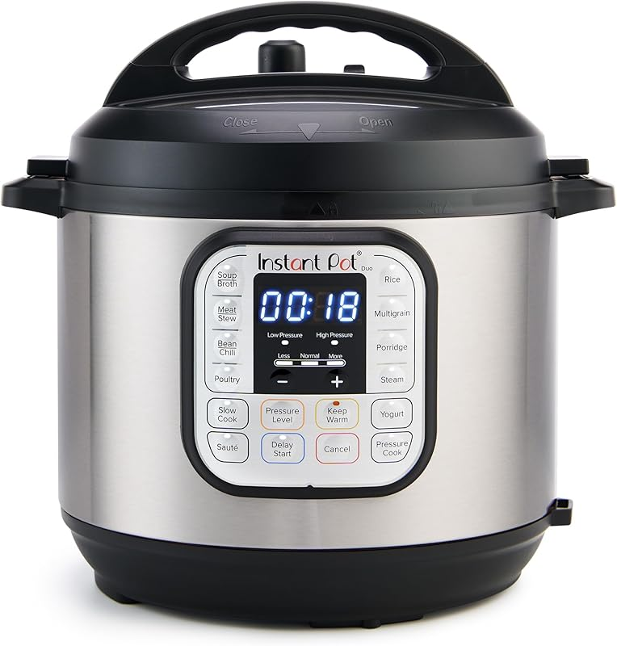
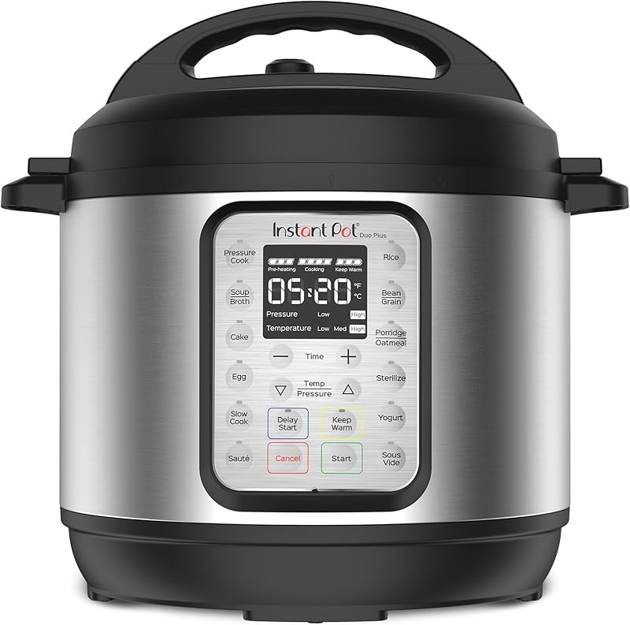
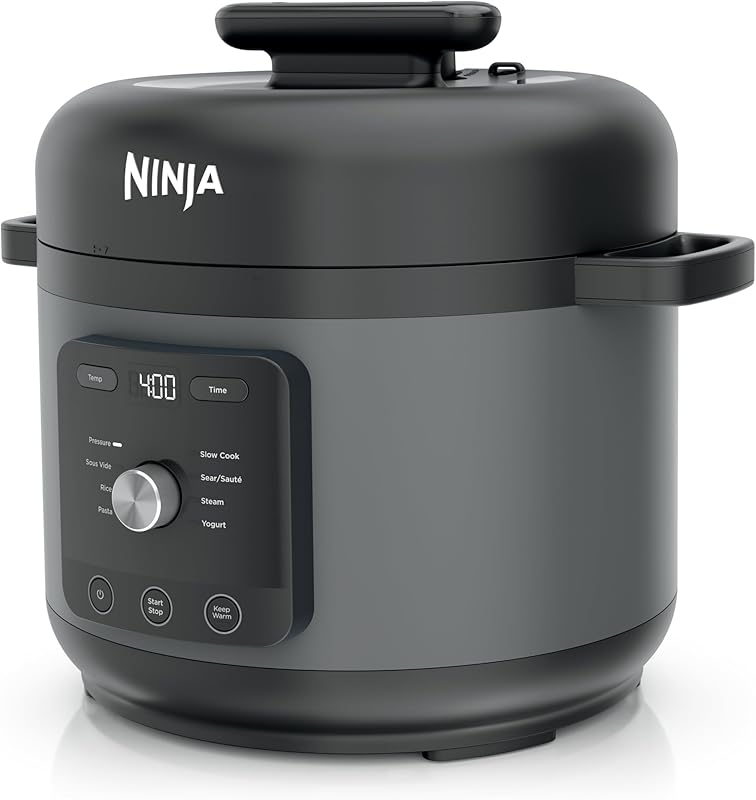
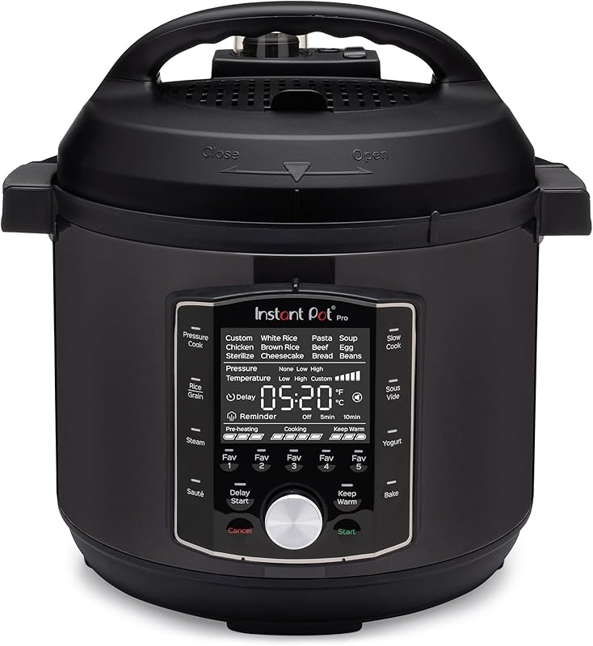

Our Core Guides
The pages below cover the highest-value buying decisions in this category.

🍲
Best Instant Pots
Duo, Pro, Ultra, and Pro Plus ranked by actual use case, price, and buyer value.

⚡
Best Pressure Cookers
Instant Pot vs Ninja Foodi vs other electric pressure cookers that still deserve consideration.

🍗
Air Fryer Combos
If you want one machine to pressure cook and crisp, this is the category that matters.

🥘
Best Slow Cookers
Some buyers should skip pressure cooking entirely and just buy the right slow cooker.

🆚
Instant Pot vs Ninja Foodi
The comparison most buyers actually care about before they spend their first hundred dollars.
👩🍳
Best for Beginners
New to pressure cooking? This page cuts the decision down to what matters first.
What Matters Most in a Multi-Cooker
Capacity
3-quart, 6-quart, or 8-quart changes everything. Too small and dinner gets annoying. Too big and weeknight cooking feels wasteful.
Programs
Most people do not need 15 cooking programs. The right core functions matter more than feature overload.
Ease of Use
Steam release design, lid handling, and interface quality matter more than spec-sheet fluff once you use it every week.
Real Value
The best model is not always the most expensive one. Some upgrades are worth paying for. Some clearly are not.
Our Take
For most people, the classic Instant Pot Duo remains the value benchmark. It covers the core use case, avoids feature bloat, and has the review history to justify trust. The Pro is the upgrade if you want better controls and a more refined experience. The rest of the category only makes sense if you have a specific reason to move beyond those two.
That is the pattern we follow across this site: start with the real use case, not the most expensive model. It sounds obvious, but most review sites do the opposite.
Frequently Asked Questions
What matters most when buying Instant Pot and pressure cooker picks?
The key factors are fit, build quality, and how the product will be used day to day. Buyers usually get in trouble when they chase the cheapest option without checking capacity, materials, or installation requirements. The right pick is the one that matches your actual use instead of the one with the flashiest bullet points.
Are premium Instant Pot and pressure cooker picks worth the extra money?
Sometimes, yes. Higher-end options usually justify the price with better hardware, sturdier materials, smoother operation, or longer lifespan. If the product will be used heavily or left installed for years, spending more up front is usually cheaper than replacing a weak option later.
How do I avoid buying the wrong Instant Pot and pressure cooker picks?
Start by measuring or confirming compatibility before looking at brands. Then compare the specific tradeoffs that matter for this category, like capacity, installation time, daily convenience, and warranty support. Most bad purchases happen when buyers pick off reviews alone without matching the product to their actual setup.
What is the biggest mistake people make with Instant Pot and pressure cooker picks?
The most common mistake is buying for the spec sheet instead of real-world use. Bigger, heavier, or more feature-packed does not automatically mean better. A product that fits your space, routine, and budget correctly will outperform an “upgraded” option that creates friction every time you use it.
How long should good Instant Pot and pressure cooker picks last?
That depends on materials, environment, and how hard they are used, but quality options in this category should hold up for years rather than months. Proper installation and occasional maintenance matter just as much as brand name. If something wears out unusually fast, poor fit or cheap hardware is usually the culprit.